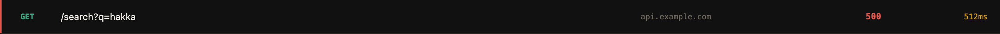
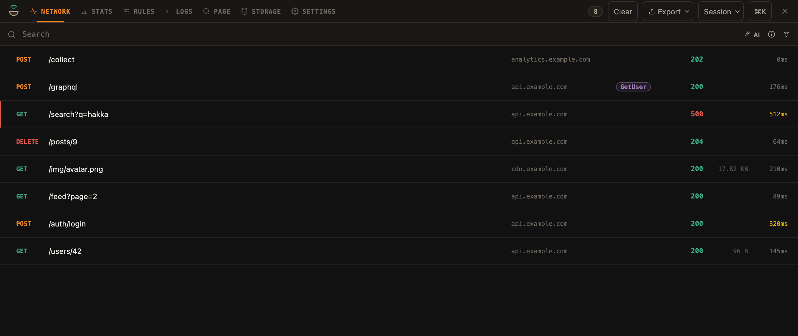

hakka
REAL INSPECTOR / DEMO TRAFFIC
EVERY BUG LEAVES A TRACE.
Somethingbroke.
HTTP STATUS
500
Start with the request.
FOLLOW THE FAILURE
Find the request.
READ THE EVIDENCE
See what came back.
TAKE THE NEXT STEP
Make it reproducible.
The response.
The error.
The clue.
COPIED FROM HAKKA
cURL
curl -X GET 'https://api.example.com/search?q=hakka'
AGENT CONTEXT · RESPONSE EXCERPT
# GET /search?q=hakka -> 500 "error": "internal_error" "traceId": "abc123"
Request + response + diagnosis
Your traffic.Your tools.
Local-first network inspection.

hakka.
Inspect. Understand. Reproduce.
github.com/ansumanshah/hakka ↗